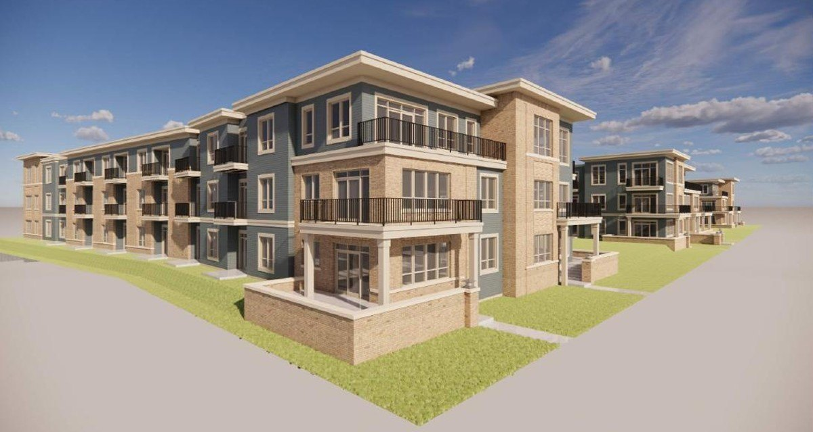

02 · Multifamily, new construction · Completed
Trader’s Way

- Address
- 6624 Old Sauk Road, Madison
- Type
- Multifamily, new construction
- Apartments
- 144
- Site
- About four acres
- Partner
- Stone House Development
- Architect
- Potter Lawson
- Builder
- Stevens Construction
- Opened
- September 15, 2026
NMD with Stone House Development
144 apartments on a four-acre former farmstead on the west side.
- 144 apartments in three stories on a four-acre former farmstead, put under contract in 2023.
- Rezoning approved unanimously by the Plan Commission, then by the City Council.
- Outdoor pool, hot tub, sauna, coworking space, green roofs, underground parking with EV charging.
- Designed by Potter Lawson. Built by Stevens Construction.
- Opened September 15, 2026.